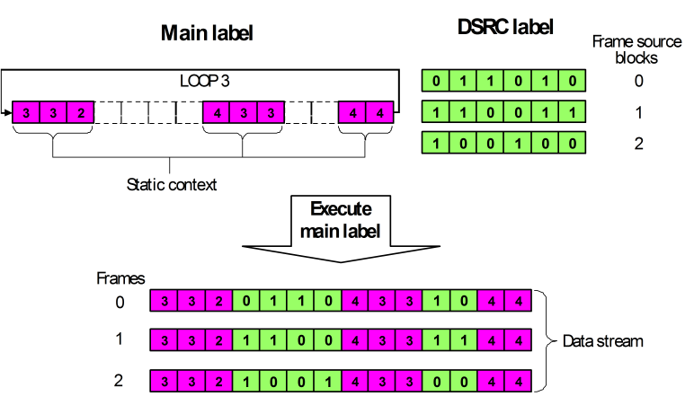
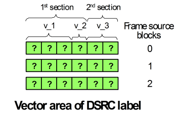
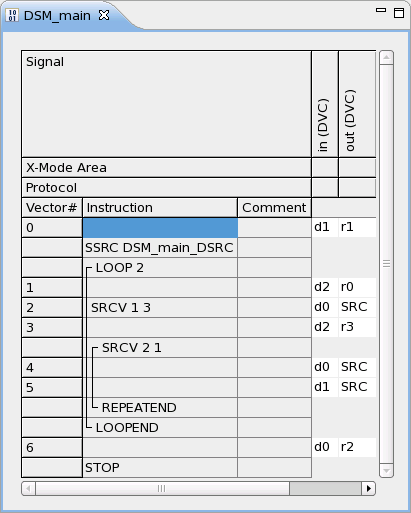
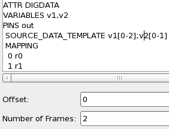
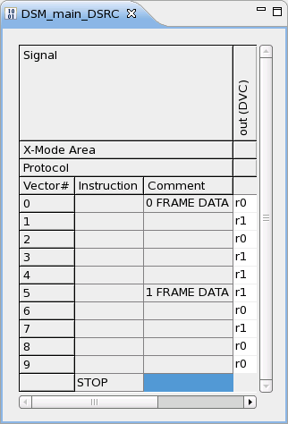
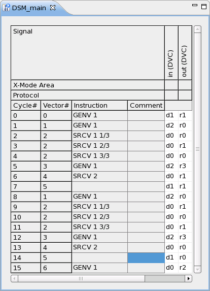
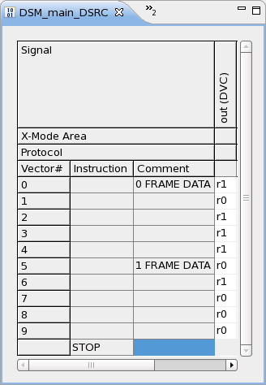

Normal DSM setup
The normal usage of DSM can be seen as a counter part to a subroutine call. A subroutine is a function block that is stored separately and can be called in different contexts. Conversely, DSM allows you to separately store a sequence of different vector blocks which are applied successively at the same positions of a static loop body from one loop cycle to the next.
The vector cycle sequence generated by one loop cycle is called a frame. The frame sequence created by the loop is the data stream. The variable vector data is called source data. Source data can be applied at more than one position of a frame; each such block is called a source vector section. The sequence of those source data sections that are executed in one loop cycle is called a frame source block.
The static context and the frame source blocks are stored in different labels. The static context is contained in a main label, the source data in a DSRC label. The connection between the two labels is established by a sequencer instruction in the main label. When the main label is executed the source data can be changed with every loop cycle.
The following picture illustrates the basic mode of operation by one pin:

The numbers are to be understood as waveform DC/DC power units. The broken-framed boxes indicate where, and how many, source vectors are to be inserted into the main label at runtime; this is defined in the sequencer program of the main label with the SRCV instruction (see below). The loop contains two source data sections.
Source and non-source pins
The source data switch can be restricted to a proper subset of the pins that are contained in the port of the main label. The pins that take part in the switch are called source pins, the other pins are non-source pins. If non-source pins exist, the DSRC label must be associated with a user defined port that contains exactly the source pins. The above picture displays a source pin.
Structuring the vector areas of the source pins in the DSRC label
A DSRC label consists of one or more frame source blocks. The structure and the total number of these blocks must be specified in a special DSM setup. They cannot be defined or modified in the Pattern Debug Tool. The main building block for defining the structure of the frame source blocks is the vector variable. A vector variable, which contains a bit sequence of a certain width, corresponds to a vector area segment of the source pins. Its width determines the length of the corresponding vector area segment.
In the simplest case, the structure definition consists of just one vector variable. In this case the frame source block has no internal structure, and the vector variable just determines its length.
The vector variables are the standard interface by which the frame source data is written to and read from the vector areas of the source pins. They are used for this purpose by the VECTOR API (see below). The names of the vector variables must be unique within the vector setup; this allows the VECTOR API to uniquely determine the label and the part of its vector area to be accessed from the vector variable name alone.
Since the content of a vector variable is a bit sequence, these variables can be used for accessing the vector areas of the source pins only if 0 and 1 are mapped somehow to waveforms (waveform DC/DC power units). This mapping is also defined in the DSM setup. Note that if you access the vector data through the vector variables, only two waveforms can be used in the frame source blocks of any source pin, one corresponding to 0, and one corresponding to 1.
In the picture above, the frame source blocks have an internal structure. The first 4 vectors belong to the first source vector section of the main label, the last 2 to the second such section. This must be indicated in the DSM setup, and the standard way to do so is to use different vector variables for the two sections. It is also possible to use more than one vector variable for the same section; this allows you to modify the data of only a part of the section.
The following picture shows the state of the DSRC label displayed in the figure above after defining the label and the DSM setup, and also indicates how the vector variables of the DSM setup are related to vector area segments:

The first section of the frame source block is defined by two vector variables,
v_1 and v_2, the second section by the one vector variable
v_3. The question marks indicate that appropriate waveform DC/DC power units must be
downloaded to the vector area in an additional step (see below).
Structure of the main label
The sequencer program must contain the SSRC instruction at the start. This instruction points to the DSRC label to be used.
The source data sections are called in the sequencer program of the main label with the SRCV instruction. A separate SRCV instruction must be coded for every section. The nth instruction executes the nth section. Vectors belonging to the static context can be inserted between two SRCV instructions.
The SRCV instruction has two numerical parameters, similar to the RPTV instruction. With respect to the non-source pins, these numbers specify the size of the vector block that is to be sent to the non-source pins during a source data section, and how often it is to be repeated. With respect to the source pins, the product of the two parameters defines how many source vectors are to be applied to the source pins; this product must equal the length of the corresponding source data section.
If the static context is to be stored only once, the alternating sequence of static context vectors and SRCV instructions must be included in a counted loop (LOOP/LOOPEND in the Pattern Debug Tool). The SSRC instruction must be placed before the start of the loop. The number of SRCV instructions within the loop must equal the number of source sections, and the number of loop repetitions must not exceed the number of frame source blocks in the DSRC label. When the loop body is executed for the mth time, the nthSRCV instruction will apply the nth section of the mth frame source block to the source pins (this can be verified by "flattening" the label with the expanded mode of the Pattern Debug Tool, for which compare the first example below).
Manipulating the vector data of the DSRC label
You cannot change the structure of the DSRC label with the Pattern Debug Tool, but it can be used to view the label and to edit individual waveforms. As a rule, however, the source data will be defined with the VECTOR Test Method API, which downloads waveform DC/DC power units to the vector area segments corresponding to one vector variable in one or more frame source blocks. This has two advantages:
- You can change the vector data at runtime.
- The VECTOR API takes the multi-site setup focus into account, that is, it only modifies the vector data of those sites that have the setup focus (see Setting the setup focus). Thus, by changing the setup focus, you can download different waveforms to the same segment of a source vector section on different sites.
If the same vector variable is used for more than one source pin, the VECTOR API will download the same sequence of waveform DC/DC power units to all of them.
The usage of the VECTOR API is illustrated in the second example below.
The waveform DC/DC power units can also be downloaded with the Signal Analyzer Tool.
Examples
A consistent normal DSM setup
The following example shows how a main label and its associated DSRC label are defined consistently, and how the DSRC label is used when the test is executed.


The left picture above shows the main label in the Pattern Debug Tool. Only pin out is a source pin.
The right picture shows the DSM setup. The upper part displays the structure
definition of the frame source block (SOURCE_DATA_TEMPLATE statement). The
block consists of two sections (separated by ";"). Both sections are defined by only one vector
variable. The first section is defined by the variable v1 and has width 3, that
is, it contains 3 vectors; the second, which is defined by v2, has width 2. 0
is mapped to waveform r0, 1 to waveform r1; this holds for
both v1 and v2.
The Number of Frames parameter in the lower part of the picture defines the number of frame source blocks that are to be created in the DSRC label. The Offset parameter will be explained in Making use of the Offset parameter.
The main label contains the required SSRC instruction (before the loop) and two SRCV instructions, corresponding to the two source data sections. "SRC" in the out column indicates that the respective waveforms are taken from the DSRC label.
Note the different specification of the vectors that are sent to the non-source pin in during execution of the two sections. The static context to be repeated consists of vectors 1 and 3.
The next two pictures show the DSRC label after downloading the vector data (left picture), and the main label in expanded mode (right picture).


The expanded mode of the main label (right picture) shows how the frames source blocks defined in the DSRC label (left picture) will be successively applied within the loop when the main label is executed. There are 4 frame source sections, which are executed by 4 SRCV calls (cycles 2-4, cycles 6-7, cycles 9-11, cycles 13-14).
Notice how the vectors for the non-source pin in conform to the numerical parameters of the SRCV instructions. In the first SRCV instance, the same waveform is repeated three times, whereas in the second instance, two different waveforms are used.
Note also that the restriction to two waveforms holds only for the source data of the source pins, not for their static context.
Manipulating the vector data with the VECTOR API
This example modifies the setup of the first example. It illustrates how the vector data of the DSRC label can be changed with the VECTOR TM API.
The following elementary test method
code interchanges waveform r0 with r1 in the first section of
both frame source
blocks:
ARRAY_I down(2);
down[0]=5; //frame source block 0
down[1]=2; //frame source block 1
VECTOR("v1").setVectors(down);Note that the name of the vector variable suffices to identify the relevant DSM setup and the DSRC label. This is possible because the names are unique within the vector setup.
The result is displayed in the Pattern Debug Tool as follows:

Functional changes
- Introduced before SmarTest 6.3.2